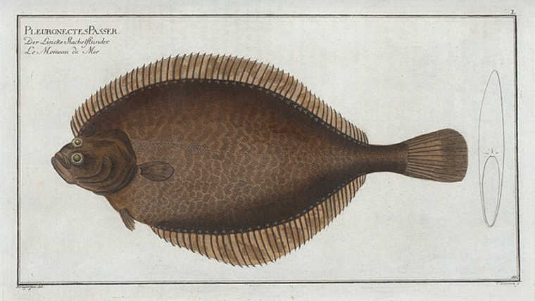
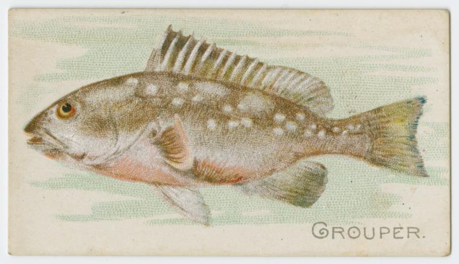
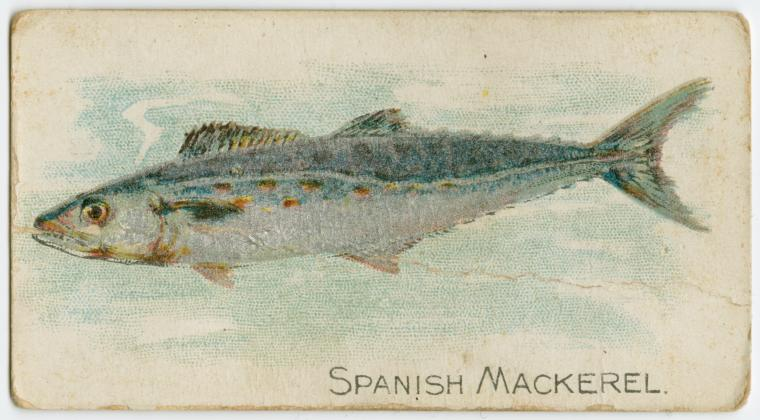
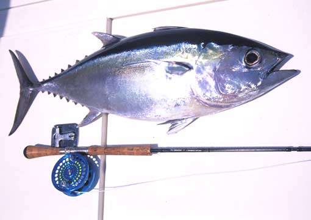

Florida
Flaunder
Flounder is a type of flatfish. There are around 30 species of flounder that can be found in tropical and temperate coastal waters of Atlantic and Pacific Ocean. Flounder lives on the ocean floor. It usually inhabits areas near the coral reefs, bridge piles and docks. Even though most species prefer coastal waters, some types of flounders can be found on a depth of 35.000 feet. Despite accelerated pollution of the sea and excessive commercial fishing, wild population of flounders is still large and stable.
Grouper
Gag Grouper
Description: Gag grouper have long, compressed bodies and 11 to 14 rays in the anal fins. Their color varies and changes with the size of the fish. Large gag are dark brownish-gray on top and paler on the bottom, with traces of dark wavy markings on the sides. Smaller fish are much lighter and have numerous dark brown or charcoal kiss-like marks along the sides. Gag grouper have deeply notched gill covers, distinguishing them from black grouper.
Size: Gag grouper grow to 51 inches and 55 pounds. Citations are given for grouper weighing 20 pounds or more.
Sometimes confused with: black grouper, scamp
Habitat: Adult gag grouper can be found from North Carolina to Brazil over low and high profile hard-bottom waters 60 to 250 feet deep. Young gag inhabit estuaries from Massachusetts to Cape Canaveral, Fla. They often congregate around rocky ledges and swim in small groups.
Eating habits: Gag grouper feed on round scad, sardines, porgies, snappers, grunts, crabs, shrimp and squid.
Life cycle: Gag change sex from female to male with increased size. Sexual transition occurs between 10 and 11 years of age. Sexual maturity is attained at age 5 or 6, when fish are 27 to 30 inches long. Spawning takes place in February off the coast of the Carolinas and in January through March in the Gulf of Mexico. Gag may live for 15 years.
Fishing tips: The best way to catch gag grouper is by bottom fishing with live bait, such as cigar minnows and squid, using depth finders to locate deepwater rock piles, ledges, wrecks and artificial reefs.
Red Grouper
Dorsal spines (total): 11; Dorsal soft rays (total): 16-17; Anal spines: 3; Anal soft rays: 8 - 10. Color of head and body dark reddish brown, shading to pink or reddish below. Opercle with 3 flat spines, the middle one being the largest. Vertical fins angulate in larger fish. Pelvic fins shorter than pectorals and inserted slightly behind ventral and pectoral-fin base. Bases of soft dorsal and anal fins covered with scales and thick skin. No saddle on caudal peduncle. Interspinous membranes not incised (Ref. 26938); head length 2.3-2.5 times in SL; convex interorbital; subangular preopercle, serrae at angle slightly enlarged; straight upper edge of operculum; posterior and anterior nostrils subequal (Ref. 89707).
Spanish Mackerel
Atlantic mackerel, sporty on light tackle, willing biters, delicious when drizzled with lemon juice and broiled on a grill, have everything to recommend them.
Blue Fin Tuna
Bluefin tuna are the ultimate catch and release heavy tackle test providing a spectacular show when striking baits. Bluefin tuna start showing up in North Carolina from mid-November through the end of January for the commercial fishery, though the recreational fishery can sometimes extend as far as April. While in recent years the tuna haven’t shown up until sometime in December, this year a Carteret County charter/headboat captain and his crew managed to catch the first tuna in the county before daybreak on Nov. 30.